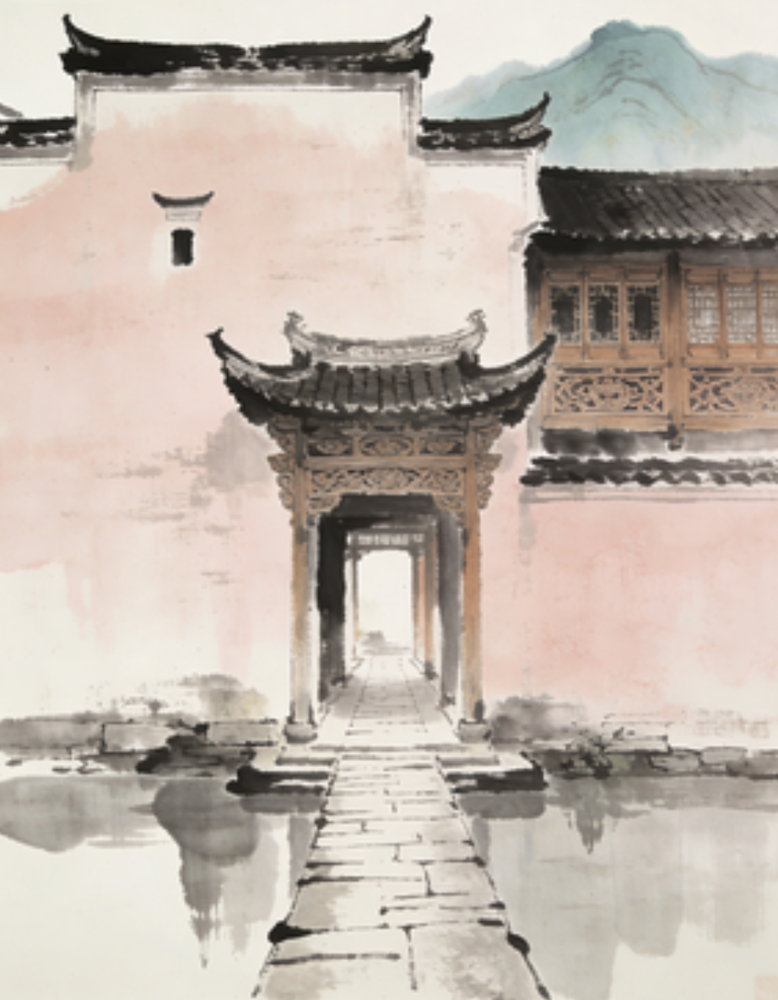
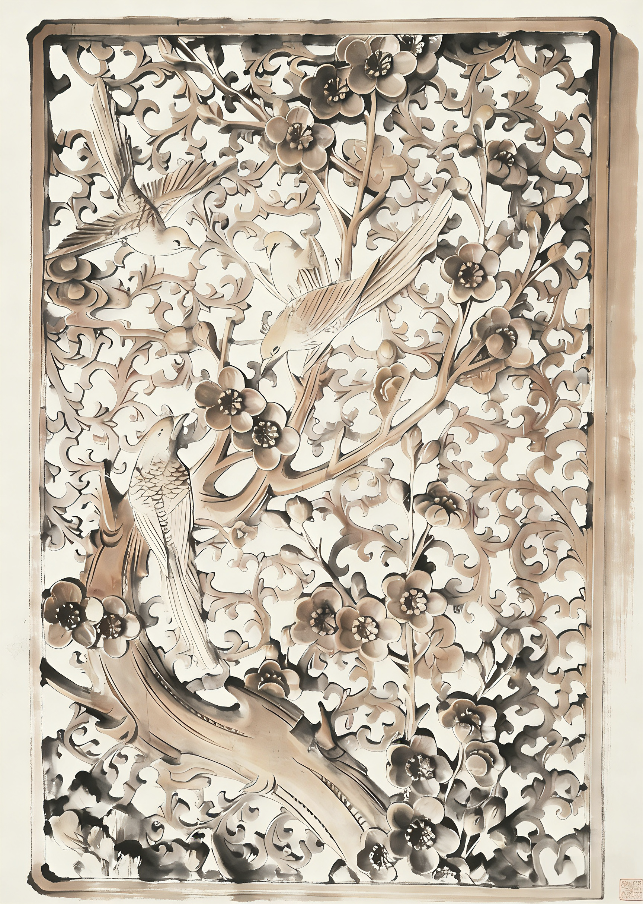

徽州工艺 · 三雕艺术
三雕艺术
The Three Carvings of Huizhou Architecture
木雕·砖雕·石雕 — 徽州工匠以刀为笔，将山川云物、诗礼廉耻镌刻于一砖一石之间， 凝固了一个时代的审美与信仰。
壹
总览
Overview
木雕
Wood Carving
砖雕
Brick Carving
石雕
Stone Carving
01
题材分布 · 三雕意象
题材分布
点击筛选图库三雕意象
悬停高亮图库贰
02
工艺知识 · 文化内涵
工艺知识
悬停翻转🪵
木雕
Wood Carving
以楠、杉、银杏为材
多施于梁架、门窗、隔扇等构件，题材多取吉祥故事、戏文人物，刀法圆润流畅，层次可达七层透雕。
🧱
砖雕
Brick Carving
以青砖为纸
专用于门楼、照壁及脊饰，将烧制好的青砖雕凿出山水楼阁，需"选砖、打坯、细雕、磨光"四道工序。
🪨
石雕
Stone Carving
以黟县青石为主
用于柱础、门框、抱鼓石、石栏板等处。线条硬朗简洁，以浮雕和圆雕为主要手法。
🏮
祥瑞寓意
Auspicious Symbols
福禄寿喜财
大量使用蝙蝠（福）、鹿（禄）、仙鹤（寿）、喜鹊（喜）、铜钱（财）等元素，体现徽商对美好生活的祈愿。

程朱礼教
Confucian Ethics
忠孝节义廉
徽州为程朱理学发源地，三雕中大量表现二十四孝、桃园三结义等忠孝故事，以空间教化后人。
🌿
自然山水
Nature & Landscape
松竹梅兰
山水、松竹梅岁寒三友、四君子为常见题材，表达文人雅志。呈现"虽由人作，宛若天开"的意境。
叁
03
三维模型展示
三维模型展示
拖拽旋转 · 滚轮缩放🖱️ 拖拽旋转 · 滚轮缩放 · 右键平移
木雕门窗花格
徽州民居门窗花格是木雕艺术的集中体现。以回字纹为底，上叠梅花及蝙蝠纹，层次分明，镂空透雕工艺炉火纯青。
雕刻层次7层
主要材质楠木
所在位置门窗
年代明末
肆
04
数据可视化 · 历史沿革
三雕数据分析
悬停暂停 · 自动滚动艺
壹 · 工艺评分
工艺复杂度对比
Craft Complexity
位
贰 · 分布位置
雕刻位置对照表
Location Distribution
| 类型 | 常见位置 | 等级 |
|---|---|---|
| 木雕 | 梁架、门窗、隔扇、牛腿、雀替 | 室内为主 |
| 砖雕 | 门楼、照壁、门罩、脊饰、墀头 | 门面外观 |
| 石雕 | 柱础、门框、抱鼓石、栏板、井圈 | 结构节点 |
值
叁 · 综合评价
六维评价数据
Six-Dimension Score
95/100
木雕艺术价值
85/100
砖雕艺术价值
78/100
石雕艺术价值
88/100
木雕文化内涵
80/100
砖雕文化内涵
75/100
石雕文化内涵
存
肆 · 保存现状
现存数量与保存难度
Preservation Status
| 类型 | 现存数量 | 保存难度 | 主要威胁 |
|---|---|---|---|
| 木雕 | 较多 | 中等 | 虫蛀、潮湿、火灾 |
| 砖雕 | 中等 | 较难 | 风化、渗水、酸雨 |
| 石雕 | 最多 | 最低 | 苔藓、机械损伤 |
材
伍 · 材质工具
主要材质与雕刻工具
Materials & Tools
| 类型 | 主材 | 常用工具 | 代表技法 |
|---|---|---|---|
| 木雕 | 楠木、杉木、银杏 | 圆凿、斜凿、平凿 | 透雕、圆雕 |
| 砖雕 | 青砖（专窑烧制） | 金刚石凿、竹签 | 高浮雕、浅浮雕 |
| 石雕 | 黟县青石、白麻石 | 钢錾、锤、磨石 | 线刻、浮雕 |
遗
陆 · 非遗保护
非物质文化遗产数据
Intangible Heritage Data
2006年
列入国家非遗
12处
传习基地
80+人
省级传承人
3D扫描
数字化采集
黄山市
核心保护区
皖·浙赣
三省分布
缓速自动滚动 · 悬停暂停
历史沿革
发展脉络唐宋 · 萌芽期
随徽州建筑初步形成，砖雕、石雕率先出现于寺庙祠堂，以几何纹样为主，风格古朴稚拙。
唐
明
明代 · 成熟期
徽商崛起带来资金支持，三雕技艺迅速成熟。木雕开始出现透雕、圆雕，题材拓展至戏文故事。宏村、西递大量实例源于此期。
清代 · 鼎盛期
三雕进入鼎盛，雕刻层次最多达七层，内容涵盖历史、神话、山水、花鸟，大型门楼砖雕出现多组画卷式叙事构图。
清
今
当代 · 传承期
列入国家级非物质文化遗产，多地设立传习所。数字化三维采集与3D打印辅助修复技术逐步应用于遗址保护工作中。
伍
05
三雕精品图录
三雕精品图录
点击放大 · 横向滚动
木雕木雕门窗花格
 木雕
木雕
木雕梁架
 木雕
木雕
木雕斗拱
 砖雕
砖雕
砖雕门楼
 砖雕
砖雕
砖雕门罩
 砖雕
砖雕
砖雕照壁
 石雕
石雕
石雕抱鼓石
 石雕
石雕
石雕柱础
 石雕
石雕
石雕门框
×

三
雕
印
雕
印